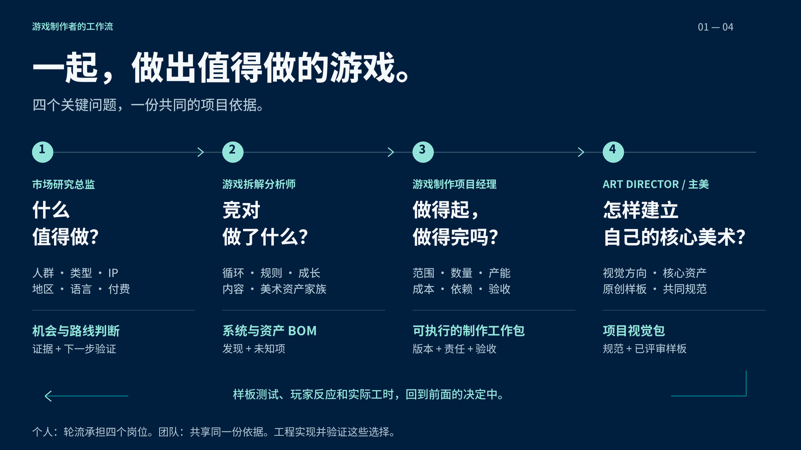

案例 01 / 合成 + 修缮
潮灯小镇
七个合成家族把同一套明亮港湾语言，从独立素材带进完整的灯塔修缮过程。


给游戏团队，也给独立创作者
把主美的设计判断、参考与组件要求交给成员和 Agent，让同一个项目的美术保持一致。
ERIC 的一段经历
他是我认识的人里，最像 "艺术家" 的那类人。
做游戏这行，很多人聊管线、工具、效率。但他聊的是 —— 一群人怎么通过一个作品跟彼此说话。他在意的是那个很微妙的 "感觉"。
有段时间我们常约饭、喝咖啡。每次聊到工作，他都在吐槽同一件事：又花了一整天，跟人解释 "我们想要的是什么"—— 跟新来的队友，跟外包，跟越来越听话、却越来越没主见的各种 AI。
我问他：你烦的到底是哪一部分？
他想了一下说：不是他们做得不好，是我每次都要从头讲一遍。这一版讲完，下一版又得重来。而且一旦一个游戏被做成纯 "工程"—— 按流程、按参数、按清单 —— 它原本的艺术性、游戏性、那种好玩，就没了。
这句话我记了很久。
因为我既是游戏爱好者，也是个 FDE—— 我的工作本来就是帮人把一件事 "接起来"。我突然意识到：他的问题从来不是品味。他的品味很好。问题是 ——他的品味没法交接、没法复用。它只活在他脑子里，活在他每次重新开口的那几分钟里。
所以我们又聊了几轮、做了几场访谈，把他脑子里那套判断 —— 参考、样板、什么能改、什么不能改 —— 一点点捞出来，变成一份别人、甚至 AI 都能接着用的东西。
它不替他设计，也不替他审美。它只是让他的 "感觉"，第一次有了一个可以被传递的载体。
后来，他真的在用了。
这就是我做一个 "视觉记忆" 的原因 —— 让艺术家的感性，不被工程吞掉。
一致性的证据
左边是真实游戏画面，右边是同一项目包中的角色、物件与关键资产。造型、色彩、材质和细节能不能接得上，一眼看清。
案例 01 / 合成 + 修缮
七个合成家族把同一套明亮港湾语言，从独立素材带进完整的灯塔修缮过程。
案例 02 / 探索 + 塔防
守灯人、森林生物、灯具与防御部件，把同一种雕刻感、手绘感森林语言带进实战画面。
两者都是原创浏览器候选样例，尚未经真人主美批准，也未完成真机与生产引擎验收。Skill 使用、检查与仍存边界 ↗
确定方向，分配组件，制作后组合检查。影片使用本轮实际候选素材。
主美先把身份、视觉语言、组件与交付要求整理进项目包。成员沿用同一版资料，继续做角色、场景、UI 与合成链。这次再扩展修缮、昼夜和归航：交木料后动手修，交灯具后亮灯，再招呼补给船。检查实际落脚、层级和状态，把共性问题带回规范。演示与 Compositor 导出使用同一场景配方；影片压缩了事件时间。角色是姿势插演，素材是原创候选，Mac 原生打开与主美/引擎验收未完成。
使用支持 Agent Skills 的工具，例如 Codex、Claude Code 或 Cursor。个人创作者也可以轮流承担下方两种角色。
npx skills add https://github.com/NewenergyEric/art-director-skill --skill art-director核心工具需要 Python 3.10+。也可以下载 Skill ZIP，交给 Agent 安装。
把现有作品、参考图、玩法与批注放进 Agent 能读取的文件夹。不必先整理完美。
使用 $art-director。这是现有作品、参考和批注。先帮我整理一版美术规范，再一步步补齐角色、场景和 UI 组件的要求，做代表样板让我确认，最后打包给团队。
你会得到 规范初稿、需要你决定的问题、样板计划，以及可分发的项目包。
先把主美分发的完整项目包交给 Agent。它包含这个项目的规范和资料。
读取这个项目包。按里面的道具规范扩展两级灯具，保持镜头、材质和光源，让升级轮廓更清楚。先给我首件，说明沿用了哪些规则，以及还有什么要检查。
你会得到 有版本、有参考的制作任务，首件与检查记录。生成和编辑使用你的 Agent 当前可用的工具。
继续说就好：对照规范检查这批结果，把要改的地方和理由列出来。
资料索引、项目定位、设计规范、交付验收、参考与反例，连同项目 Skill 一起走。团队不依赖主美原来的聊天记录。
以上是可运行的虚构项目草案，供你了解交付内容。
可以。Agent 先接上现有工作，保留成立的规范和样板，补足缺口。你用自然语言修改，Agent 同步手册和项目包。
它帮助整理判断、对照规则检查、解释返修依据。主美仍负责方向与发布决定，技术检查通过也不代表审美已获批准。
art-director 帮主美建立规范；可选的 game-art-production 接包后组织生成、组合与分层交付。二者读取同一份项目规范。普通制作不需要 Compositor；需要图层编辑时再导出 .comp。下载制作 Skill
潮灯小镇冻结的 0.3.0 包保留了前次场景配方与 Compositor 分层交付，早于 0.4.0 的八帧修缮动作。文件格式与换目录交付检查已通过，Mac 原生打开尚未验证。0.3.0 候选包 · 0.3.0 检查记录 · 此前的画风探索
主美发布新版本，新任务读取新版；已开始的任务保留原版本，避免制作中途悄悄换规则。
GAME DEV SKILLS
个人创作者可以轮流承担四种角色，团队则按职责交接。从眼前的问题开始，再用实际制作的证据修正前面的判断。

↶ 样板测试、玩家反馈与实际工时，持续修正前面的决策。
工程把这些选择落到产品中，与美术和内容制作共同验证。此图说明岗位协作关系，不代表已实现自动多 Agent 编排。